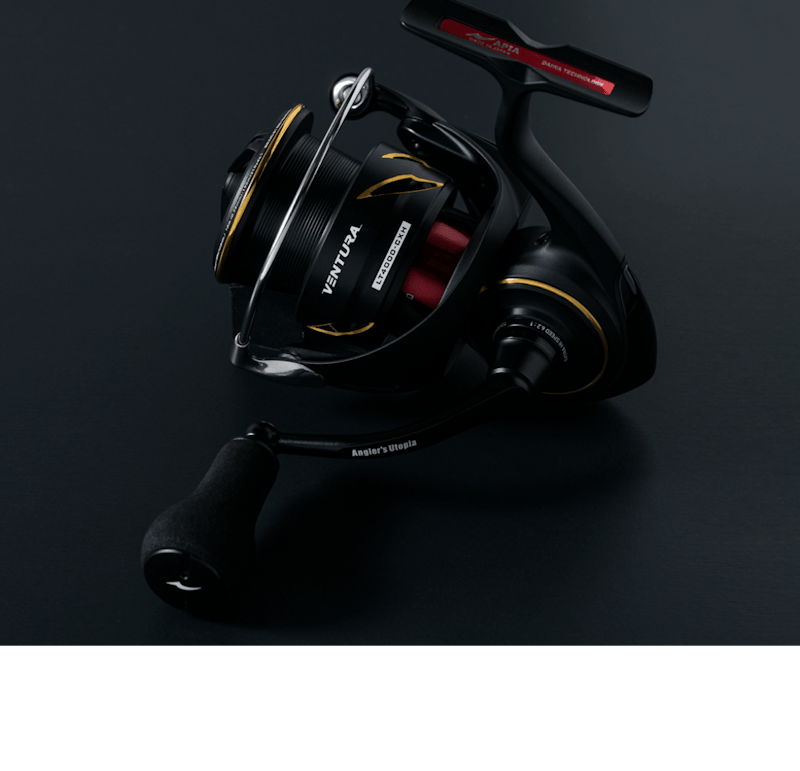
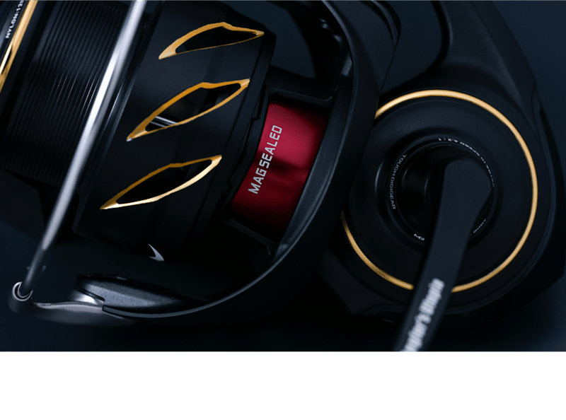
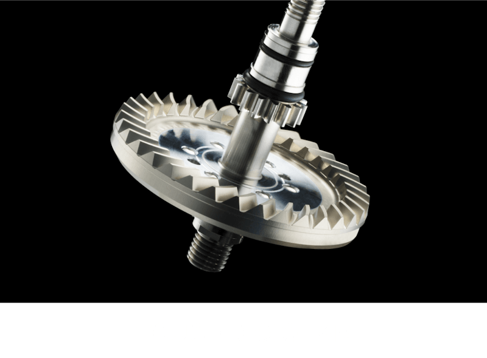

25 ベンチュラ LT4000-CXH
（25 VENTURA LT4000-CXH）
25 ベンチュラ LT4000-CXH（25 VENTURA LT4000-CXH）はAPIA（アピア）のスピニングリールです。
2015年に誕生したアピア初のカスタムチューンリール「VENTURA」の2代目。グローブライド社の全面協力により、軽量化と剛性化の両面を成し遂げたモデルで、一体成型のフルメタルモノコックボディと、フラッグシップに匹敵するマグシールド・ボールベアリングを搭載した特別限定仕様です。

画像出典:APIA公式HP
スペック
- メーカー
- APIA（アピア）
- タイプ
- スピニングリール（4000番・エクストラハイギア）
- 自重
- 240g
- ギア比
- 6.2
- 巻き取り長さ
- 99cm（ハンドル1回転）
- 最大ドラグ力
- 12kg
- 標準巻糸量（PE）
- 1.5号-200m／1.2号-310m
- ベアリング
- 12BB／1RB
- ハンドル
- 55mm・パワーライトノブMロング
- 価格
- 99,000円（税込）
▼今すぐチェック
25 ベンチュラの特徴
「意のまま」を追求した、シーバスのためのカスタムチューンリール
-
フルメタルモノコックボディ
ボディカバーを廃し、ボディに直接プレートをねじ込んで固定するモノコックボディを採用。ギアの支持精度・剛性・気密性が高まり、ドライブギアの大径化も実現している。
-
フルマグシールドと12BB+1RB
ドライブギア両端・ピニオン部・ラインローラー部の3か所にマグシールドを搭載したフルマグシールド仕様。ボールベアリング数もフラッグシップに匹敵し、滑らかな巻き心地を実現している。
-
実戦重視の独自ハンドル設定
エクストラハイギアながら巻き感度を高めたアームレングス（55mm）に設定し、ファイト時にしっかり握り込めるパワーライトノブを採用。スナップだけでも回しやすく、流速の変化を捉えやすい。
25 ベンチュラの使い方
シーバスゲームで最も汎用性が高い4000番のコンパクトボディなので、港湾部・河川・外洋のどこでも1台で使えます。
エクストラハイギアで巻き取りが速いので、ルアーの回収や流れの中での糸ふけ回収がスムーズ。PE1.2〜1.5号を巻いて、シーバスロッドと組み合わせるのが基本です。
25 ベンチュラのがおすすめの人
シーバスを中心に、港湾・河川・外洋まで1台で幅広く使いたい人に向いたリールです。
フージンZなどアピアのロッドと合わせて「アピアで揃えたい」人や、巻き心地や剛性に妥協したくない人にオススメ。特別限定仕様なので、気になる人は早めにチェックしておきましょう。
ワンポイント
付属品として、スプール位置調整ワッシャーやノブ用工具、リールバッグが付いています。ラインを巻くときは、スプール位置調整ワッシャーで糸巻き形状を整えると、トラブルを減らせます。
使用後は真水で軽く洗って塩分を落とし、陰干しで乾かしましょう。
25 ベンチュラの主な仕様
| 項目 | 仕様 | ポイント |
|---|---|---|
| ボディ | アルミ・モノコック | 剛性・気密性が高く、大径ドライブギアを搭載 |
| ローター | ZAION | カーボン繊維を高密度に織り込んだ特殊樹脂で軽量・高剛性 |
| 防水機構 | フルマグシールド | ドライブギア両端・ピニオン部・ラインローラー部 |
| ドラグ | ATD TYPE-L | 滑り出しと追従性を高めたドラグ |
| スプール | 薄肉アルミ・Φ51mm | 肉抜きで軽量化し、巻き出しの軽さとキャスト性を向上 |
仕様は公式サイトの記載によるものです。特別限定仕様のため、最新の在庫は販売店で確認してください。
ディテール
25 ベンチュラのディテールを紹介します。

エアドライブデザイン意のままにルアーを操作することを追求した、次世代スピニングリールの設計思想。

マグシールド磁性を持つオイルの壁で、海水や埃の侵入を防ぐDAIWA独自の防水構造。

タフデジギア滑らかな回転がより長く続く、強靭な心臓部。
画像出典:APIA公式HP
25 ベンチュラとあわせてチェックしたいアイテム
-
 フージンZ 6th
アピア
詳細はこちら＞
フージンZ 6th
アピア
詳細はこちら＞
アピアのフラッグシップシーバスロッド。ベンチュラと合わせて最高峰のタックルを組みたい人に。
-
フージンRS（全モデル紹介）
アピア
詳細はこちら＞
フージンZの製法を受け継いだシーバスロッドのミドルクラス。ベンチュラと組み合わせやすい。
-
 ガネット Ver.2
アピア
詳細はこちら＞
ガネット Ver.2
アピア
詳細はこちら＞
アピアのフローティングベスト。装備まで「アピアで揃えたい」人に。